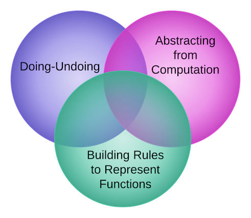

Algebraic Habits of Mind

What are Algebraic Habits of Mind?
In his book Driscoll provides a Framework under which we can understand and develop algebraic thinking in our own and in our student's mathematical work. The three main components of said Framework are: Doing-Undoing, Building Rules to Represent Functions and Abstracting from Computation. These are key features that enables a facility to think about functions and how they work -as inBuilding Rules to Represent Functions-, and also to think about how the structure of a system relates to calculations -Abstracting from Computation-. In either case we can think of an algebraic problem as roughly having "two" directions: from unknown to answer and from answer to unknown, and thus Doing-Undoing ties the pieces of this framework together.

Figure 1: A Framework for developing Algebraic Habits of Mind
Let us explore each of these components:
Doing-Undoing
Why is it that when we ask one type of question students seem to do a reasonable good job but when we ask an slightly different but related question they have a considerable harder time answering it? For example, if we ask students to compute the first few terms of a sequence given by: f(n) = n^2+1, students need just to plug in a few numbers say 1,2,3,4 and 5, to provide an answer. In general this type of question build from their understanding of arithmetic and so students with a solid arithmetic foundation should have no problem at all. In contrast, if we ask the following question: what rule or function describes the following sequence: 2,5,10,17,26,...? Even students with solid arithmetical background might have a harder time answering this question even tough one is just the reverse of the other.
As stated by Driscoll "effective algebraic thinking sometimes involves reversibility (i.e., being able to undo mathematical processes as well as do them)." Ideally, we as teachers and our students should be able to not only use an algebraic procedure to obtain an answer (the "Doing" direction), but also work our way from the last step of said procedure back to the original input to the problem (the "Undoing" direction). This of course assumes the procedures are reversible, which is not always the case. Hence, in applying this type of reasoning, exercises and examples should be carefully chosen so that they are reversible. In fact, types of procedure that are not reversible are very important in other fields on inquiry, for example in Cryptography.
Building Rules to Represent Functions
Consider the previous example of finding a rule for a given sequence of numbers. We can also interpret this example as the capacity to organize data into patterns such that the input (the data) is related to output in a well-defined functional form. Organizing data and uncovering hidden relationship is a crucial ability that all citizens of our modern world should posses. Our modern world is characterized, in among many other ways, as one where data plays a key role. Everyday we are bombarded with lots of data which we must make sense of. The algebraic habit of mind of Building Rules to Represent Functions I think encaptures this fundamental ability of transforming data into functions.
One obvious advantage is that by turning data into function we are able to both summarize and characterize data into simpler form which we can later study abstractly. To continue with our example, it seems intuitively easier to manipulate and understand the expression f(n) = n^2+1, which is a finite expression consisting of only two basic operations (multiplication and addition) than to deal with the infinite sequence of numbers 2,5,10,17,26,..., even tough they are both suppose to represent the same object. Note how interrelated this issue is with that of Doing-Undoing. As clearly stated by Driscoll: "the capacity to understand how a functional rule works in reverse generally makes it a more accessible and useful process.
Abstracting from Computation
This is my favorite Algebraic Habit of Mind. Maybe this has to do with my computer science background and how much of computing is really just abstracting certain features of a system. Or maybe just with my fascination for the word "abstract" and how it seems to relate to almost everything we do on a daily basis (at times the word Abstract seems to be another buzzword, so I am going to refer you to WITTGENSTEIN quote on my page on teaching algebra). In any case it seems that one of the key features of Algebra is the ability to manipulate quantities without knowledge as to what the exact value of the quantity is. This Habit of Mind directly builds in previous knowledge from arithmetic but at the same times generalizes to far more powerful and reaching situations.
A good example of Abstracting from Computation is the famous sum of the first n natural numbers. This is a very rich mathematical problem that has been worked in a myriad of ways. I encourage you to know more about it by reading the corresponding Wikipedia entry. The problem is easily stated: What is the sum of the first n numbers? That is: 1+2+3+...+n, where n is some unknown but fixed natural number. This is a good example where the structure of the problem could help us solve it by first abstracting or ignoring what particular numbers we are using in this sum and instead focusing on what properties these numbers have. We know they are commutative and associative. So, we can take this sum in any order we like. Of course, there are many possible different orders and some might not reduce the complexity of the problem at all. Here is where abstraction, that fuzzy term, comes into play by realizing that one particular rearrangement is very useful. Take the first and the last number, 1 and n. What do they add up to? n+1. Now take the second and the term before the last, i.e., 2 and n-1. What do they add up to? 2+(n-1) = 2+n-1 = n+1. You can probably see a pattern emerging now. Just group numbers, two at a time such that the sum is n+1. The question is now, how many such numbers do we have? A moment of thought shows that, if n is even, then there are exactly n/2 such pairs. Hence, the sum of the first n numbers is [n/2](n+1) = [n(n+1)]/2. This formula also works in case n is odd because in that case n+1 is even.
Some (More) Examples
There are (literally) thousands of examples of algebraic habits of mind. Don't believe me? Try this google search. So I will just try to summarize some of it next. But before I do so, I want to point out that you can come up with your own examples. In fact, part of effective teaching amounts to picking right examples. In some cases this means choosing examples from an example provider (such as a textbook or the internet), while in other cases this might mean you will have to construct your own examples and tailor them to the specific objectives for a given lesson or lecture. In any case, for Algebraic Habits of Mind, it is useful to think about the following (taken from Driscoll):
- Doing-Undoing
- How is this number in the sequence related to the one that came before?
- What if I start at the end?
- Which process reverses the one I’m using?
- Can I decompose this number or expression into helpful components?
- Building Rules to Represent Functions
- Is there a rule or relationship here?
- How does the rule work and how is it helpful?
- Why does the rule work the way it does?
- How are things changing?
- Is there information here that lets me predict what’s going to happen?
- Does my rule work for all cases?
- What steps am I doing over and over?
- Can I write down a mechanical rule that will do this job once and for all?
- How can I describe the steps without using specific inputs?
- When I do the same thing with different numbers, what still holds true? What changes?
- Now that I have an equation, how do the numbers (parameters) in the equation related to the problem context?
- Abstracting from Computation
- How is this calculating situation like/unlike that one?
- How can I predict what’s going to happen without doing all the calculations?
- What are my operation shortcut options for getting from here to there?
- When I do the same thing with different numbers, what still holds true? What changes?
- What are other ways to write that expression that will bring out hidden meaning?
- How can I write the expression in terms of things I care about?
- How does this expression behave like that one?
Why developing Algebraic Habits of Mind is important for the teaching of Algebra in grades 7-12?
By now the importance of these Algebraic Habits of Mind should be apparent. However, let me give a few final comments in the case of teaching of Algebra in grades 7-12. Thinking about why developing Algebraic Habits of Mind is important for the teaching of Algebra in grades 7-12, necessarily forces us to think why teaching Algebra is important at all. Or why we should even teach Algebra to begin with? I think this is an easy question to answer. Although, as stated in my teaching algebra page, Algebra is a concept hard to define, we know it has certain features that are valuable as reasoning tools. And we all know people who can reason effectively are more likely to become citizens capable of making right choices with the information that is provided to them.
In general, I think that Algebra enable us (directly and indirectly) to: Think critically, Solve problems, Communicate well and Work collaboratively. Note that these are all essential skills for successful individuals regardless of the particular position they have in society. As teachers we want our students to succeed beyond the classroom, so we better make sure the tools that we provide to them are going to serve this purpose. Algebra, without a doubt is one of them. One way to effectively teach Algebra is through developing Algebraic Habits of Mind. Hence, I think is important to develop Algebraic Habits of Mind Algebra in grades 7-12. Moreover, Algebra is first introduced in grades 7-12 and the first interaction with a subject is usually remembered by students long ago, even when the details of such interaction are forgotten. We also know that rules and recipes are easily forgotten. Therefore, teaching Algebra through Algebraic Habits of Mind where the subject is first introduced increases the chances that the student will remember algebraic tools and procedures long after class is over. This is fact is aligned with the philosophy of Reasoning and Sense Making in Algebra, a philosophy I wholeheartedly agree with.
Further Resources
Is impossible to summarize all that there is to know about Algebraic Habits of Mind in just one place. This is why this section provides links to more resources to help you think about Algebraic Habits of Mind both in your algebraic work and when preparing teaching lessons.